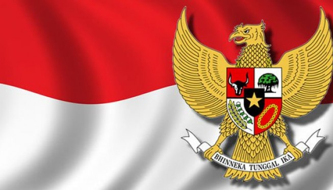

Hak dan Kewajiban menurut Pancasila
Sila 1
Hak
- Hak memeluk agama sesuai dengan keyakinan masing-masing
- Hak untuk melaksanakan ibadah menurut kepercayaannya masing-masing
Kewajiban
- Menghormati orang lain yang berbeda keyakinan
- Tidak memaksakan agama sendiri ke orang lain
Sila 2
Hak
- Hak mendapat perlakuan adil dan setara di hukum maupun kehidupan sehari-hari
- Hak mendapatkan penghidupan yang layak dan sejahtera
Kewajiban
- Mengakui persamaan derajat
- Menerapkan sikap tenggang rasa dan tepo sliro
Sila 3
Hak
- Ikut serta dalam pembelaan negara
- Hak hidup dan bergaul dalam semangat persaudaraan
Kewajiban
- Ikut berpartisipasi dalam kegiatan masyarakat contohnya gotong-royong.
- Rela berkorban bagi kepentingan bangsa dan negara.
Sila 4
Hak
- Hak menyampaikan pendapat secara lisan maupun tertulis
- Hak memperoleh kesempatan yang sama dalam pemerintahan.
Kewajiban
- Tidak memaksakan pendapat sendiri
- Menerima dengan lapang dada hasil keputusan musyawarah
Sila 5
Hak
- Hak mendapatkan jaminan sosial
- Hak mendapatkan pekerjaan dan perlindungan kesehatan
Kewajiban
- Tidak merusak fasilitas umum
- Menggunakan hak milik sesuai dengan kegunaannya tanpa mengganggu hak milik orang lain.
Hak Asasi Manusia menurut Pasal 28 UUD 1945
A. Hak untuk hidup
B. Hak untuk berkeluarga dan berketurunan
C. Hak untuk mengembangkan diri dan mendapatkan pendidikan
D. Hak atas perlindungan hukum
E. Hak memeluk agama
F. Hak untuk mendapatkan informasi
G. Hak atas perlindungan diri dan keluarga
H. Hak hidup sejahtera dan bertempat tinggal
I. Hak untuk tidak disiksa dan kemerdekaan berpikir
J. Wajib menghormati hak asasi manusia lain
